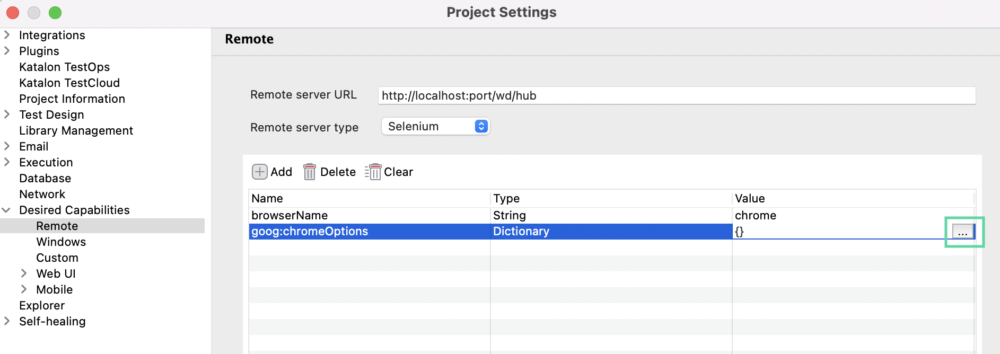
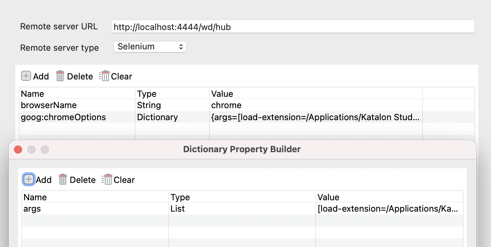

This section presents a workaround for applying Smart Wait extension for remote execution.
The Smart Wait function is only available on Chrome and Firefox.
From version 8.2.0 onwards, the Smart Wait function is available on Edge Chromium.
To apply Smart Wait for remote execution in Chrome for Katalon Studio, follow these steps:
- In the node machine
- Download a Katalon .zip package. You can download different versions of the Katalon package from our GitHub repository: Katalon releases.
- Unzip the file and locate the Smart Wait folder.
For macOS: <Katalon Studio folder>/Contents/Eclipse/configuration/resources/extensions/Chrome/Smart Wait
For Windows: <Katalon Studio folder>\configuration\resources\extensions\Chrome\Smart Wait
- In the test runner machine: The test runner machine is where you install Katalon Studio and store the test scripts.
- Open Katalon Studio.
- Go to Project > Settings > Desired Capabilities > Remote, then fill in the following information:
Remote Server URL: http://localhost:port/wd/hub - the URL of the hub machine.
Remote Server Type: Choose Selenium.
Click Add on the command toolbar, then input the following values:
| Name | Type | Value |
|---|
| browserName | String | chrome |
| goog:chromeOptions | Dictionary | Click More (...). In the pop-up Dictionary Property Builder dialog, click Add, then input values from Table 2. |
| Name | Type | Value |
|---|
| args | List | load-extension=<the absolute path to the Smart Wait folder located in the node machine> |
